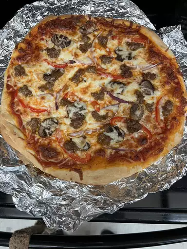

Shaved Ice Recipe

Ingredients
- Cheese
- Dough
- Tomato Sauce
- Garlic
- Garlic Oil
- Bazil
- Whatever toppings you would like!
Step-by-step Recipe
- Make dough
- Kneed dough until smooth
- Place dough in a well-oiled bowl and cover with a damp cloth
- Set aside to rise until doubled, about 1 hour. Punch down; knead in garlic and basil. Set aside to rise for 1 more hour, or until doubled again
- Preheat your grill for high heat
- Carefully place one piece of dough on the hot grill. Dough will begin to puff almost immediately. When the bottom crust has lightly browned, turn dough over using two spatulas.
- Top with each of the following: tomato sauce cheese, basil, and whatever other toppings you want!
- Close the lid and cook until cheese melts. Remove from grill and set aside to cool for a few minutes
Back to recipes